Как и в большинстве современных систем отображения, начало каждой системы координат находится в ее верхнем левом углу, с координатой X, увеличивающейся вправо, и координатой Y, увеличивающейся вниз:

Базовой единицей является пиксель, причем верхний левый пиксель имеет координаты (0, 0). Координаты, которые вы указываете как целые числа, всегда выражаются в пикселях, но любые координаты могут быть указаны как размерная величина; см. Раздел 5.1, “Размеры”.